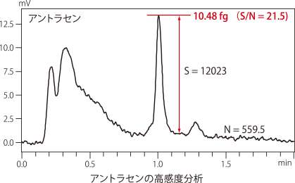
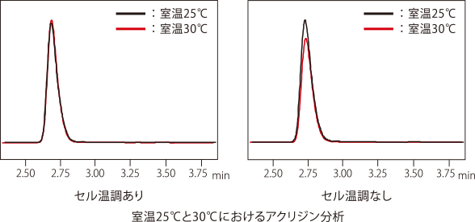
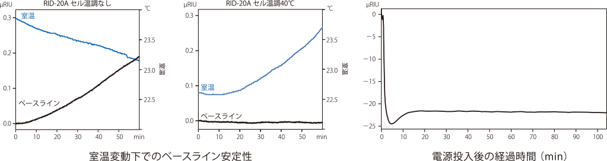
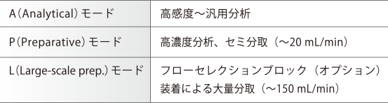
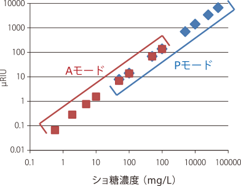

拡張モジュール
蛍光検出器 RF-20A／20Axs
RF-20A/20Axsは、世界最高レベル※の感度とメンテナンス性を実現した蛍光検出 器です。RF-20Axsは、冷却機能を有する温調セルを標準装備した高感度モデルで す。温調セルにより、室温の変動による蛍光強度の変動を劇的に改善し、優れた再 現性が得られます
-
世界最高レベル※の高感度
アントラセン10.48fg注入でS/N 21.5を実現しています（RF-2 0Axs）。これは、検出限界（S/N 3）約1.5 fgに相当し、卓越し た感度を有していることを示しています。極微量成分の検出が 求められる分析に威力を発揮します
 -
 温調セルによる安定した分析（RF-20Axs）
蛍光強度は、温度上昇に伴い低下します。な かには常温付近で1℃変化すると、約5%も強 度が変化する化合物もあります。
RF-20Axsは、セル温調機能を有しており、た とえ室温が大きく変化するような環境であって も、検出器セル温度を一定に保ち、優れた再現 性をもたらします
示唆屈折率検出器 RID-20A
RID-20AはProminenceシリーズの強みである安定性や拡張性を継承し、新たにリ ファレンスセルのオートパージ機能、バリデーションサポート機能を搭載した新型示 差屈折率検出器です。
ベースラインの優れた安定性
RID-20Aは光学系の二重温調機能やランプ性能の向上により室温変化に影響されることなく ベースラインの安定性を保つことができます。また、電源投入後ベースラインが安定するまで の時間が短く、ダウンタイムの短縮を実現しています。

島津独自の技術で高感度分析から
分取まで対応
-
ID-20Aは4分割受光素子により、1台で高感度測定から分取まで以下の3つのモードが利用できます。